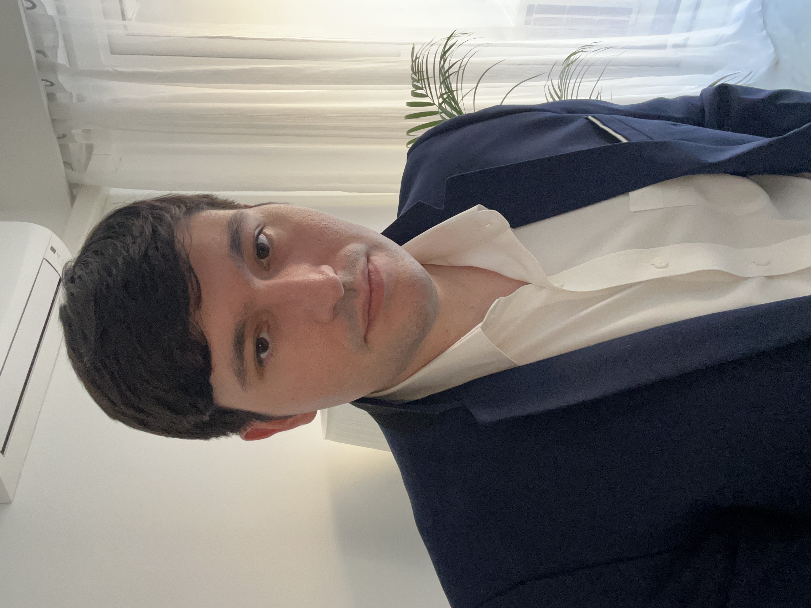

With a passion for creating seamless user experiences and scalable solutions, I am a dedicated full-stack developer who thrives at the intersection of creative design and technical implementation. I combine strong front-end expertise with robust back-end capabilities to build comprehensive applications that solve real business challenges. My commitment to clean, maintainable code and continuous learning drives me to stay current with emerging technologies while delivering thoughtful solutions that exceed client expectations.
June 2015 - October 2022
October 2022 - November 2023
November 2023 - Present